Phantom IM 即时通讯开发平台架构设计
面向接入方的 IM PaaS：SDK + OpenAPI 对外，WSS + Protobuf 实时通道，双 Timeline 同步模型，RocketMQ 驱动的异步消息核心，Maven 多模块「可分可合」工程结构。
0文档说明
本文档由 docs/design/ 下三份专题设计汇编而成，按架构设计说明书的通行结构重组：先交代目标与约束，再依次给出业务、逻辑、数据、运行时、开发、部署六个视图，最后是质量属性与需求追溯。专题文档仍是各自主题的权威来源，本文负责串联与导读。
| 源文档 | 日期 | 状态 | 本文对应章节 |
|---|---|---|---|
| IM 通讯协议设计 | 2026-08-07 | 已评审 v1.0 | §5.3、§6、§7、§8、§10、§13.5 |
| 服务端消息核心架构设计（RocketMQ） | 2026-08-07 | 待评审 | §9、§13.1–13.3 |
| 服务端工程结构设计 | 2026-08-25 | 待评审 | §11、§12 |
0.1读者与阅读路径
产品 / 架构评审
§1 概述 → §3 决策记录 → §4 业务架构 → §5 总体架构 → §13 质量属性
客户端 / SDK 开发
§6 通讯协议 → §7 数据架构 → §8 核心流程 → §10 接口与错误码
服务端开发 / 运维
§9 消息核心 → §11 开发视图 → §12 部署视图 → §13.3 故障恢复
文中 MSG-16 这类标记为 PRD 需求编号；所有架构图均可点击放大，源文件为 diagrams/*.drawio，可用 draw.io 直接编辑。
1概述
1.1背景与目标
Phantom IM 定位为 IM 开发平台（PaaS）：接入方在自己的 App 中集成 Phantom IM SDK，在自己的服务端通过 OpenAPI 管理用户与应用配置。平台不提供 C 端账号体系，用户身份仅为 Phantom ID；注册、登录凭证、隐私与注销由接入方用户体系承担，鉴权改为接入方服务端签发 UserToken（PRD 01 v0.2）。
架构需要达成的核心目标：
- 消息可靠：不丢、不重、不乱序是底线，服务端与客户端双侧保证。
- 多端一致：手机 / 桌面 / Web 三类设备同时在线，已读、会话状态、草稿跨端同步 MD-01 MD-05。
- 永久漫游：历史消息永久保存，新设备可分页回溯 MD-03。
- 低成本起步、按需演进：初期单体部署，规模上来后按瓶颈逐个拆分，业务代码零改动。
1.2范围
本期纳入
完整协议栈（长连接 + HTTP API + 同步机制 + 媒体通道）；单聊、群聊（≤500 人）、会话列表、多端同步与漫游、通知推送、搜索、安全合规；OpenAPI 管理面；应用级阅后即焚。
MVP 不纳入
音视频通话、动态 / 朋友圈、端到端加密、云备份、平台侧扫码登录（由接入方账号体系实现）。协议已为 CALL_RECORD、CHANNEL、E2EE 预留扩展位（§6.6）。
1.3术语
| 术语 | 含义 |
|---|---|
| Phantom ID | 平台内用户唯一标识，全局唯一、跨应用不冲突；由接入方经 OpenAPI 导入时由 external_user_id 映射生成 AC-02 |
| AppID / AppSecret | 应用标识与密钥。AppSecret 用于接入方本地签发 UserToken，以及 OpenAPI 请求签名 |
| UserToken | 接入方服务端用 AppSecret 签发的 JWT（HS256），SDK 用它完成 WS 握手与端上 HTTP 调用 |
| Envelope | 长连接每个 WebSocket 二进制帧承载的 Protobuf 外层结构 |
会话 Timeline / conv_seq | 按会话存放完整消息体的有序时间线，conv_seq 为会话内严格递增序号，永久保存 |
用户同步 Timeline / user_seq | 按用户存放轻量同步事件的时间线，user_seq 为用户维度严格递增序号，滚动保留 30 天 |
| SyncEvent | 需要多端感知的变更事件（新消息、撤回、已读、会话状态等 10 类） |
| 扇出（Fanout）/ 写扩散 | 把一条消息为每个接收者各写一份同步事件；本平台纯写扩散 |
| 在线路由表 | 记录用户各端连接落在哪个网关实例的 Redis 数据结构（§9.6） |
| launcher | 只做依赖聚合与配置的启动工程，决定部署形态（单体 / 拆分） |
2架构约束与设计原则
2.1约束
| 类别 | 约束 | 来源 |
|---|---|---|
| 业务 | 消息不丢、不重、不乱序；群上限 500 人；三类设备各至多一条在线连接；历史消息永久保存 | MSG-13~16 GC-02 MD-01 MD-03 |
| 产品形态 | 平台无 C 端账号体系；平台只验签 UserToken、不回调接入方 | PRD 01 v0.2 AC-03 |
| 终端 | iOS / Android / 桌面 / Web 四端功能对齐，一套协议栈 | PRD 总纲 |
| 技术栈 | Java + Spring Boot 4.x（Spring Framework 7、Jakarta EE、JDK 21） | 团队既定 |
| 契约 | 客户端与服务端共用同一份 proto/phantom/v1/*.proto | 工程结构设计 §5 |
2.2设计原则
conv_seq → 落会话 Timeline → 发事务消息 → 回 SendMsgResp。写扩散、推送、索引、风控全部由 RocketMQ 消费组异步完成。mediaId，再发只含元数据的消息。Envelope，协议层零改动。user_seq 只由扇出服务分配，所有进入用户同步 Timeline 的事件都经 MQ 汇入，杜绝并发写序号竞态。3架构决策记录
三份专题设计中的关键决策汇总如下，按影响面从外到内排列。
| 决策项 | 结论 | 理由 |
|---|---|---|
| 产品定位 | IM 开发平台（PaaS）：SDK + OpenAPI 对外，无 C 端账号体系 | 身份仅 Phantom ID，鉴权由接入方服务端签发 UserToken |
| 协议范围 | 完整协议栈：长连接 + HTTP API + 同步机制 + 媒体通道 | 覆盖 PRD 全部功能域的通信需求 |
| 传输层 | WebSocket（WSS）四端统一 | 一套协议栈一套网关，Web 端零适配，MVP 成本最低 |
| 序列化 | 长连接 Protobuf，HTTP API JSON | 实时通道要效率与强 schema；HTTP 要易用易调试 |
| 同步模型 | 双 Timeline 混合模型 | 会话 Timeline 存消息体，不放大存储、支撑永久漫游；用户同步 Timeline 存轻量事件，单游标多端补齐、状态事件统一时序。与微信 / 钉钉同构 |
| 消息中间件 | Apache RocketMQ | 事务消息、顺序消息、延时消息、消费重试 + DLQ 一站式覆盖 IM 可靠性需求 |
| 同步 / 异步边界 | conv_seq 分配与会话 Timeline 落库同步完成，其余全部异步 | conv_seq 是不乱序与漫游的根基，必须在返回 SendMsgResp 前确定 |
| 落库与投递原子性 | RocketMQ 事务消息，不用本地 Outbox 表 | 省去 outbox 表与扫描任务；事务回查可直接查会话 Timeline |
| 扇出模型 | 纯写扩散，不预留读扩散降级 | 群上限 500 人，写放大可控 |
user_seq 写入方 | 扇出服务唯一写入 | 保证单调递增有唯一权威 |
| 工程形态 | 单一 Maven 聚合工程，每个服务一个 module | 一次 checkout 全量可见，契约变更原子提交，统一版本治理 |
| 部署形态 | 可分可合：launcher 决定单体 / 按域拆分 / 全微服务 | 初期单体降低运维成本，按瓶颈逐个拆出，业务代码零改动 |
| 服务间调用 | service-api 接口 + 条件装配：同 JVM 直调，跨进程 gRPC | 复用 protobuf 契约体系；本地 / 远程切换不侵入业务代码 |
| 注册中心 / 配置 | Nacos（可替换 Consul / K8s Service） | 拆分形态的服务发现与应用配置（功能开关 AC-08）下发 |
| MQ 在单体中的地位 | 单体形态仍经 RocketMQ | 事务消息、削峰、顺序语义是架构根基，不随部署形态变化 |
4业务架构
从 PRD 功能域视角，平台自上而下分为五层：用户可感知的业务场景，由 10 个功能域组合支撑；功能域遵循同一套领域规则（避免各域自定义时序与状态语义）；规则依赖共性的基础业务能力；能力最终沉淀为业务数据资产。平台化与开放能力贯穿全部层次。

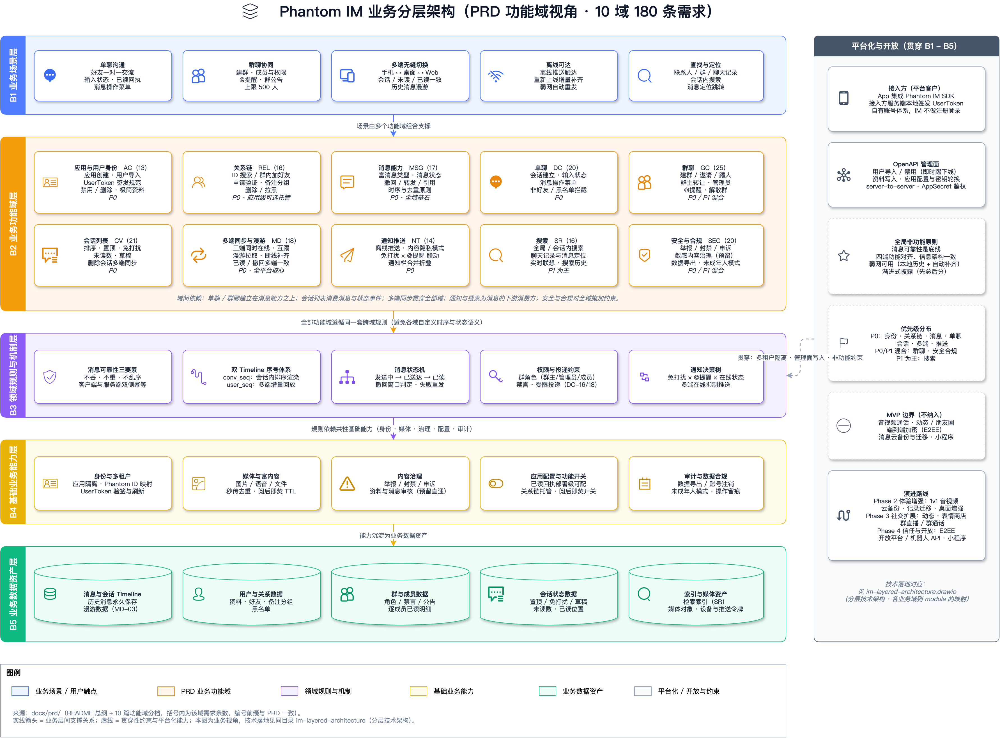
点击放大| 功能域 | 编号前缀 | 需求数 | 核心能力 |
|---|---|---|---|
| 应用与用户身份 | AC | 13 | 应用创建、用户导入、UserToken 签发规范、禁用 / 删除、极简资料 |
| 关系链 | REL | 16 | ID 搜索、申请验证、备注分组、删除 / 拉黑（应用级可选托管） |
| 消息能力 | MSG | 17 | 富消息类型、消息状态、撤回 / 转发 / 引用、时序与去重原则 |
| 单聊 | DC | 20 | 会话建立、输入状态、消息操作菜单、非好友 / 黑名单拦截 |
| 群聊 | GC | 25 | 建群 / 邀请 / 踢人、群主转让、管理员、@提醒、禁言、公告 |
| 会话列表 | CV | 21 | 排序、置顶、免打扰、未读数、草稿、删除会话多端同步 |
| 多端同步与漫游 | MD | 18 | 三端同时在线、互踢、漫游拉取、断线补齐、已读 / 撤回多端一致 |
| 通知推送 | NT | 14 | 离线推送、内容隐私模式、免打扰 × @提醒联动、通知合并 |
| 搜索 | SR | 16 | 全局 / 会话内搜索、聊天记录与消息定位、实时联想 |
| 安全与合规 | SEC | 20 | 举报 / 封禁 / 申诉、敏感内容治理、数据导出、未成年人模式 |
5总体技术架构
5.1分层架构
技术上分为六层加一条贯穿的支撑运维层。依赖方向自上而下；业务服务之间不直接依赖，只经契约层或 MQ 事件交互。

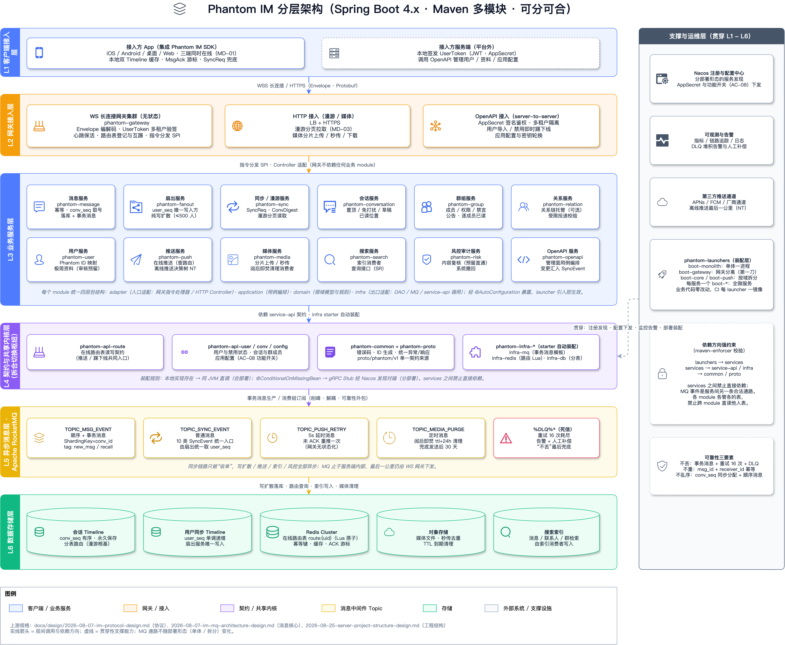
点击放大5.2各层职责
| 层 | 组成 | 职责 |
|---|---|---|
| L1 客户端接入 | 接入方 App（SDK）、接入方服务端 | SDK 维护本地双 Timeline 缓存、ACK 游标、发送队列与同步引擎；接入方服务端签发 UserToken、调用 OpenAPI |
| L2 网关接入 | WS 网关集群、HTTP 接入、OpenAPI 接入 | Envelope 编解码、多租户验签、心跳、路由表登记与互踢、指令分发 SPI；网关无状态 |
| L3 业务服务 | 13 个业务 module | 消息收单、扇出、同步 / 漫游、会话、群组、关系、用户、推送、媒体、搜索、风控、OpenAPI |
| L4 契约与共享内核 | phantom-api-*、common、proto、infra starter | 拆合切换枢纽：本地实现存在则同 JVM 直调，否则 gRPC stub 经 Nacos 发现对端 |
| L5 异步消息 | RocketMQ 5 个 Topic + DLQ | 事务 / 顺序 / 延时消息，削峰、解耦、可靠性外包 |
| L6 数据存储 | 会话 Timeline、用户同步 Timeline、Redis Cluster、对象存储、搜索索引 | 消息永久存储、同步事件滚动窗口、在线路由与幂等、媒体、检索 |
| 支撑与运维 | Nacos、可观测与告警、第三方推送通道、launchers | 注册发现、配置下发、监控告警（含 DLQ 堆积）、部署装配 |
5.3通道职责划分
长连接 WSS + Protobuf
消息发送与接收（Send / Push / Ack）；同步事件拉取（Sync）与已读上报（MarkRead）；信令：输入状态、在线状态订阅、撤回、App 前后台；服务端主动通知：被踢下线、强制登出。
HTTPS + JSON
资料、关系链、黑名单、群管理；会话列表快照与会话状态写入；历史漫游分页、搜索；设备管理、推送 Token、举报、数据导出；媒体分片上传（下载走 CDN 直链）；OpenAPI 管理面。
会话状态写入（置顶等）走 HTTP：它是低频的请求-响应操作。写入成功后服务端产生 ConvStateEvent 进入其他端的同步 Timeline，再经 WS 回到各端，形成「乐观更新 + 广播」闭环。
6通讯协议设计
6.1帧格式
WebSocket binary 帧，每帧一个 Protobuf Envelope：
message Envelope { uint32 version = 1; // 协议版本，当前为 1 Command cmd = 2; // 指令，见 6.2 uint64 cid = 3; // 客户端请求流水号；响应帧回带；服务端主动推送为 0 int32 code = 4; // 响应码，0 成功；请求帧与推送帧为 0 bytes payload = 5; // cmd 对应的报文体（Protobuf 序列化） }
- 请求-响应配对：客户端每次请求
cid单调递增，服务端响应帧回带同一cid。 - 三类帧：Req（客户端 → 服务端，期待响应）、Resp（回应 Req）、Push（服务端 → 客户端，
cid=0，不需响应；MsgPush例外，需回MsgAck）。
6.2指令集
| 分段 | 域 | 指令 |
|---|---|---|
0x0001~0x00FF | 连接管理 | AUTH_REQ/RESP PING/PONG KICK_PUSH LOGOUT_REQ/RESP |
0x0100~0x01FF | 消息 | SEND_MSG_REQ/RESP MSG_PUSH MSG_ACK RECALL_MSG_REQ/RESP RECALL_PUSH |
0x0200~0x02FF | 同步 | SYNC_REQ/RESP MARK_READ_REQ/RESP READ_RECEIPT_PUSH CONV_DIGEST_REQ/RESP |
0x0300~0x03FF | 信令 | TYPING_SIGNAL TYPING_PUSH PRESENCE_SUB_REQ/RESP PRESENCE_UNSUB_REQ PRESENCE_PUSH APP_STATE_REQ/RESP |
6.3认证握手与在线策略
连接建立后首帧必须是 AuthReq，10 秒内未认证服务端主动断开。
AuthReq {
access_token // UserToken：接入方服务端用 AppSecret 签发的 JWT（§10.2）
device_id // 客户端生成并持久化的设备唯一标识
device_type // MOBILE / DESKTOP / WEB（MD-01 三类设备）
platform // ios / android / windows / macos / web
client_version
app_id // 应用标识（AC-01），验签与租户路由依据
user_id // Phantom ID，须与 UserToken claims 一致
}
AuthResp {
server_time // 服务端时间，供客户端校准时钟偏移
max_user_seq // 服务端当前最新 userSeq，客户端据此判断需要同步多少
heartbeat_interval_s // 服务端建议的心跳间隔
burn_after_read // 应用级阅后即焚配置 { enabled, ttl_seconds }
read_receipt // 应用级已读反馈配置 { enabled }
}
认证成功后服务端将 (userId, deviceType, deviceId, connId) 登记进多端在线路由表（§9.6），并执行在线策略：
- 同类型互踢 MD-02：同
device_type已有连接时，向旧连接推KickPush{ reason=SAME_TYPE_LOGIN }后断开。 - 设备总数上限 MD-18：超上限且无同类型可顶替时，返回
2005 DEVICE_LIMIT_EXCEEDED，拒绝连接。
KickPush.reason | 触发 |
|---|---|
SAME_TYPE_LOGIN | 同端登录顶替 |
REMOTE_LOGOUT | 远程下线 MD-15 / OpenAPI 强制下线 AC-10 |
TOKEN_REVOKED | 接入方吊销凭证或禁用用户 AC-06、AppSecret 应急轮换 |
BANNED | 平台封禁 SEC-08 |
KickPush 的 SDK 不得自动重连，须回调宿主 App 并透传 reason，由宿主决定后续（引导重新获取 UserToken 或退出）。6.4心跳与在线判定
- 客户端按
heartbeat_interval_s发送Ping（移动端基线 270 秒，可自适应下调），服务端回Pong。 - 服务端连续 2 个周期未收到任何上行帧，判定连接失效，摘除路由表记录。
- 路由表在线状态是离线推送触发的判定输入 NT-01：某账号无任何在线可达连接时，新消息转入推送流程。
6.5断线重连
- 指数退避重连：
1s, 2s, 4s, … 上限 60s，每次叠加 ±30% 随机抖动，避免服务端恢复时的重连风暴。 - 重连成功 → 重新
AuthReq→ 比较max_user_seq与本地游标 → 落后则立即SyncReq增量补齐 MD-05。 - 弱网期间本地缓存正常可读；发送队列中未确认消息按 §8.1 规则重试。

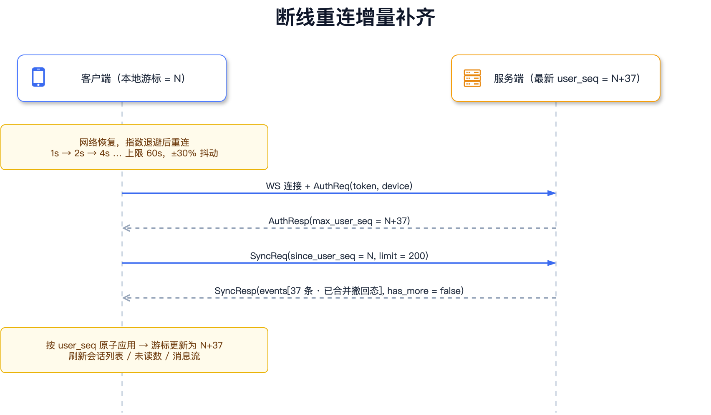
点击放大6.6协议演进与兼容
Envelope.version当前为 1；不兼容变更递增版本，网关按版本路由或返回1004 UPGRADE_REQUIRED。- Protobuf 演进：只增不删字段号，废弃字段
reserved，枚举首值为*_UNSPECIFIED=0。 - 路线图预留：
ConvType预留CHANNEL；MsgType预留CALL_RECORD（Phase 2 音视频）；E2EE（Phase 4）时MsgContent可整体替换为密文封装字段，Envelope / Sync 层无需改动。
7数据架构
7.1标识体系
| 标识 | 生成方 | 作用 |
|---|---|---|
client_msg_id | 客户端（UUID v4） | 幂等去重键 MSG-16。服务端按 (sender_id, client_msg_id) 去重，重复提交返回首次结果 |
msg_id | 服务端 | 消息全局唯一 ID，撤回 / 引用 / 举报的目标标识 |
conv_id | 规则生成 | 单聊：si_ + 双方 uid 升序拼接 hash，任何入口进入同一好友会话必得同一 ID；群聊：gr_ + groupId |
conv_seq | 服务端，会话内严格递增 | 会话内排序唯一依据 MSG-15，漫游分页游标 |
user_seq | 服务端，用户全局严格递增 | 同步 Timeline 事件编号，多端增量补齐游标 MD-05 |
server_time | 服务端 | 展示时间与撤回窗口判定基准，客户端本地时钟不参与排序 |
7.2消息模型
message Msg { string msg_id; string client_msg_id; string conv_id; ConvType conv_type; // SINGLE / GROUP string sender_id; MsgType msg_type; MsgContent content; // oneof，见 7.3 int64 conv_seq; int64 server_time; // 毫秒 string reply_to_msg_id; // 引用回复（MSG-13），空 = 非引用 ReplySnapshot reply_snapshot; // 引用摘要快照（原消息撤回后仍可展示） repeated string mentions; // 被 @ 的 userId；哨兵值 "ALL" 表示 @全体 bool recalled; // 同步/漫游下发时已合并撤回态 }
7.3消息类型
| 类型 | 内容要点 | 约束 |
|---|---|---|
TEXT | text，≤5000 字符 | MSG-01 |
EMOJI | 内置表情包 id（Unicode emoji 直接走 TEXT） | MSG-02 |
IMAGE | mediaId、缩略图 URL、原图 URL、宽高、大小；多张 = 多条独立消息 | MSG-03 |
VOICE | mediaId、时长 ≤60s | MSG-04 |
VIDEO | mediaId、封面、时长 ≤5min、大小 ≤100MB | MSG-05 |
FILE | mediaId、文件名、大小 ≤500MB、扩展名 | MSG-06 |
LOCATION | 经纬度、POI 名称、地址（P1） | MSG-07 |
CARD | 名片类型（用户 / 群）、目标 id、快照昵称头像（P1） | MSG-08 |
MERGED | 合并转发，内嵌 repeated Msg，≤100 条，不可嵌套 | MSG-12 |
SYSTEM | 系统提示（建群 / 入群 / 撤回占位 / 受限投递提示等），模板 id + 参数 | 各文档系统消息 |
大小 / 时长超限由客户端发送前拦截 MSG-17，服务端二次校验兜底。
7.4双 Timeline
| 会话 Timeline | 用户同步 Timeline | |
|---|---|---|
| 键 | (conv_id, conv_seq) | (user_id, user_seq) |
| 内容 | 完整消息体，1 份 | 轻量事件（引用 + 状态变更），每接收者 1 份 |
| 保留 | 永久 MD-03 | 滚动窗口 30 天 |
| 用途 | 历史漫游分页、全量重建 | 多端增量补齐、状态同步 |
| 通道 | HTTP（§8.7、§10.4） | WS SyncReq/Resp |
| 唯一写入方 | 消息服务（同步收单） | 扇出服务（异步写扩散） |
7.5同步事件类型
所有需要多端感知的变更统一进入同步 Timeline，按 user_seq 严格排序：
| 事件 | 触发 | 需求 |
|---|---|---|
NewMessageEvent | 收 / 发消息（含本人他端发出） | MD-05/06/12 |
RecallEvent | 消息被撤回 | MD-13 |
ReadPositionEvent | 本人任一端已读位置变更 | MD-07/08 |
ReadReceiptEvent | 单聊对端已读 / 群已读人数变化 | MSG-09 |
ConvStateEvent | 置顶 / 免打扰 / 会话删除 / 标记已读 | MD-09/10 CV-18 |
DraftEvent | 草稿变更（含清空），带编辑时间戳做冲突仲裁 | MD-11 |
RelationEvent | 好友通过 / 删除 / 拉黑 / 解除、申请到达 | REL-06/07 |
GroupEvent | 成员进出 / 权限变更 / 禁言 / 公告 / 群资料 / 解散 | GC 系列 |
ProfileEvent | 本人资料 / 隐私设置变更、好友备注变更 | AC-09/11/12 |
RestrictedDeliveryEvent | 受限投递提示（§8.1） | DC-16/18 |
NewMessageEvent 默认内联完整消息体（省一次回捞）；超大内容仅带 (conv_id, conv_seq, msg_id) 引用，客户端经漫游接口回捞。
7.6存储选型
| 存储 | 数据 | 要点 |
|---|---|---|
| 会话 Timeline | 完整消息体 | conv_seq 有序、永久保存、分表路由（phantom-infra-db） |
| 用户同步 Timeline | 同步事件 | user_seq 单调递增、30 天滚动窗口、扇出服务唯一写入 |
| Redis Cluster | 在线路由表、幂等键、缓存、ACK 游标 | route:{uid} 按 user_id 分片，Lua 原子操作 |
| 对象存储 | 媒体文件 | sha256 秒传去重、阅后即焚 TTL 到期清理 |
| 搜索索引 | 消息 / 联系人 / 群检索 | 由搜索索引消费组异步写入 |
8核心业务流程
8.1消息发送

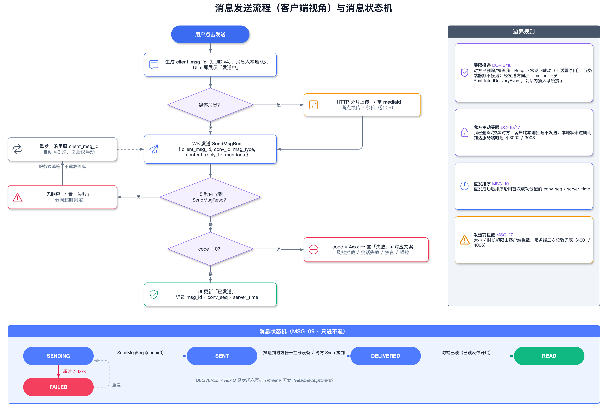
点击放大- 重发：沿用原
client_msg_id重新提交，服务端幂等保证不重复落库；排序沿用首次成功的conv_seqMSG-10。自动重试上限 3 次，之后仅手动。 - 受限投递 DC-16/18：对方已删除 / 拉黑我时，
SendMsgResp正常返回成功（不透露原因），服务端静默不投递；随后经发送方自己的同步 Timeline 下发RestrictedDeliveryEvent，客户端插入系统提示气泡。 - 我方主动受限 DC-15/17：客户端本地拦截；本地状态过期而到达服务端时，返回
3002 NOT_FRIEND/3003 IN_MY_BLACKLIST。
SENDING → SENT → DELIVERED → READ，失败态 FAILED，状态只进不退。DELIVERED 在服务端投递到对方任一在线设备（或对方 Sync 拉到）时经发送方同步 Timeline 下发；READ 见 §8.6。8.2接收与 ACK 必达

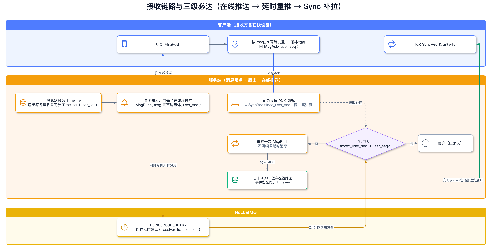
点击放大设备级 ACK 游标即「该设备已确认到的 user_seq」，与 SyncReq.since_user_seq 是同一游标：在线推送与离线补拉共用一套进度，不存在两套账。

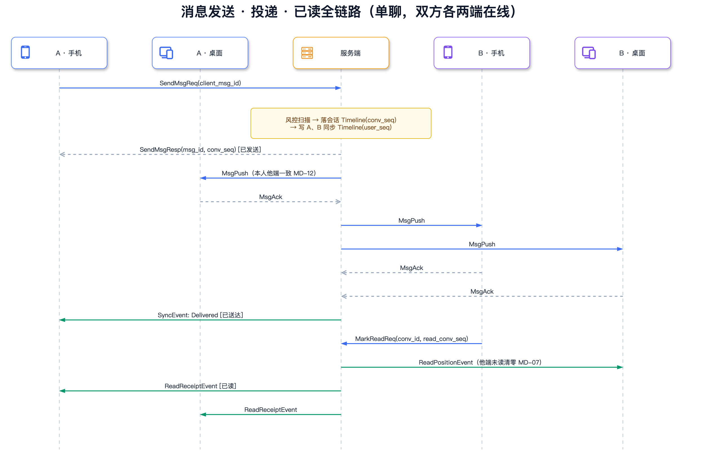
点击放大8.3撤回

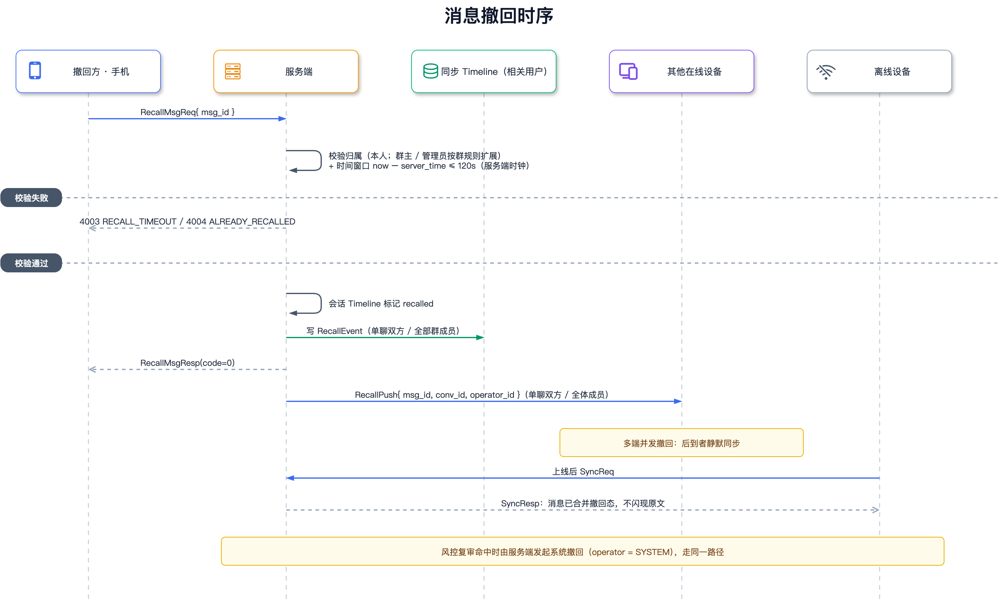
点击放大RecallMsgReq{ msg_id }→ 服务端校验归属（本人；群主 / 管理员按群规则扩展）+ 时间窗口now − server_time ≤ 120s（以服务端时钟为准）。- 通过 → 会话 Timeline 标记
recalled，写撤回事件进所有相关用户的同步 Timeline，并向在线设备推RecallPush。 - 超时 / 重复撤回 →
4003 RECALL_TIMEOUT/4004 ALREADY_RECALLED；多端并发撤回时后到者静默同步。 - 离线设备经 Sync 拉到的消息已合并撤回态，不会闪现原文。
8.4增量同步

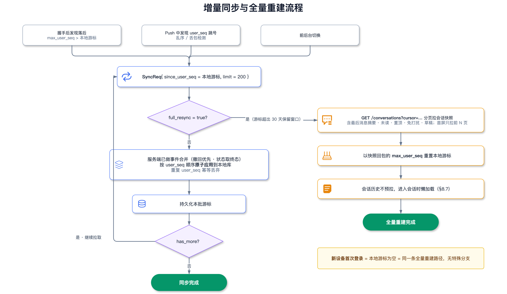
点击放大SyncReq{ since_user_seq, limit=200 }
SyncResp{ events[], max_user_seq, has_more, full_resync=false }
- 触发：握手后发现落后、任何 Push 中发现
user_seq跳号、前后台切换。 - 客户端循环拉取直到
has_more=false，按user_seq顺序原子应用到本地库，每批持久化游标。 - 服务端下发前做事件合并：同一消息的「新消息 + 撤回」合并为撤回态；同一会话多次置顶只保留终态。天然满足「撤回优先」。
- 重复事件按
user_seq幂等丢弃。
8.5游标过期与全量重建
流程见图 8-5 右侧分支。since_user_seq 超出 30 天窗口时返回 full_resync=true，客户端放弃事件回放，改走 HTTP 全量重建：
GET /conversations?cursor=…分页拉会话列表快照（含最后一条消息摘要、未读数、置顶、免打扰、草稿）；首屏只拉最近活跃的前 N 页。- 以快照回包中的
max_user_seq重置本地游标。 - 各会话历史不预拉，进入会话时懒加载（§8.7）。
新设备首次登录 = 本地游标为空 = 同一条全量重建路径，无特殊分支。
8.6已读同步

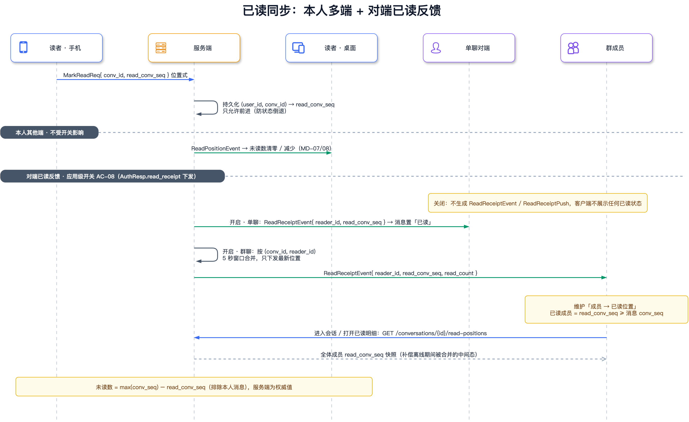
点击放大MarkReadReq{ conv_id, read_conv_seq } // "已读至 conv_seq=N"，位置式而非逐条式
- 服务端持久化
(user_id, conv_id) → read_conv_seq，只允许前进。 - 本人其他端（不受开关影响）：收
ReadPositionEvent，未读数清零 / 减少 MD-07/08。 - 对端已读反馈（受应用级开关 AC-08 控制，经
AuthResp.read_receipt下发）：- 关闭：不生成
ReadReceiptEvent，客户端不展示任何已读状态； - 开启 · 单聊：对端收
ReadReceiptEvent{ reader_id, read_conv_seq }，消息置「已读」； - 开启 · 群聊：任一成员已读位置前进时向群成员下发事件，客户端维护「成员 → 已读位置」集合；已读成员 =
read_conv_seq ≥ 消息 conv_seq。
- 关闭：不生成
- 放大抑制：按
(conv_id, reader_id)做 5 秒窗口合并，500 人群单窗口回执量 ≤ 活跃阅读者数。 - 冷启动补偿：
GET /conversations/{conv_id}/read-positions返回全体成员当前位置快照。 - 未读数 =
max(conv_seq) − read_conv_seq（排除本人消息），服务端为权威值。
8.7历史漫游

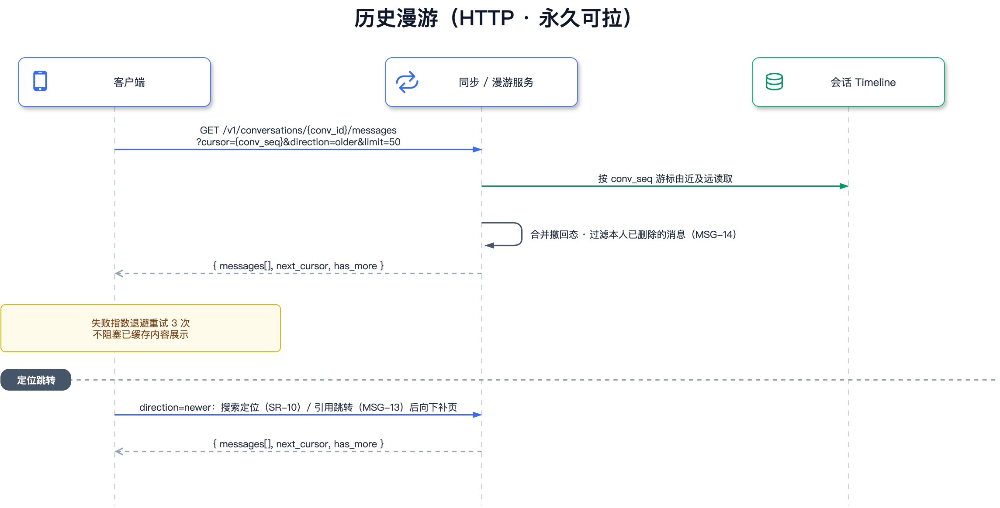
点击放大GET /v1/conversations/{conv_id}/messages?cursor={conv_seq}&direction=older&limit=50
→ { messages[], next_cursor, has_more }
- 游标分页由近及远，永久可拉 MD-03/04；
direction=newer支持搜索定位 / 引用跳转后向下补页。 - 返回的消息已合并撤回态与删除过滤（本人已删除的消息不返回，删除记录按用户维度存储）。
- 失败指数退避重试 3 次，不阻塞已缓存内容展示。
8.8状态防漂移兜底
广播事件可能因服务端异常丢失。客户端在前后台切换或每 30 分钟发起一次轻量摘要比对：

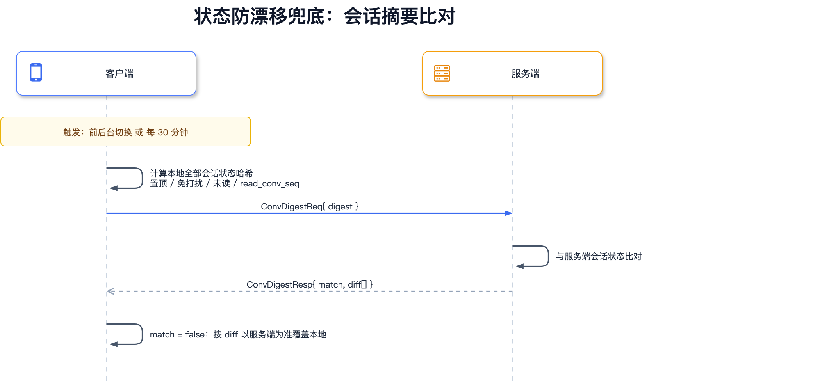
点击放大ConvDigestReq{ digest } // 本地全部会话状态（置顶/免打扰/未读/read_conv_seq）的哈希
ConvDigestResp{ match, diff[] } // 不一致时返回差异项，以服务端为准覆盖本地
8.9信令

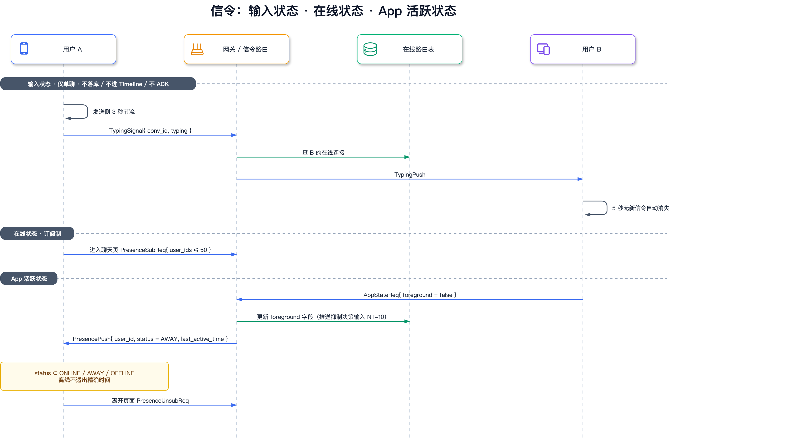
点击放大输入状态 DC-06
TypingSignal 不落库、不进 Timeline、不 ACK，仅向单聊对端在线设备转发。发送侧 3 秒节流，接收侧 5 秒无新信令自动消失。
在线状态 DC-05
订阅制：进入聊天页 PresenceSubReq（≤50 人），离开时退订。状态 ONLINE / AWAY / OFFLINE，离线不透出精确时间。
App 活跃状态
前后台切换上报 AppStateReq{ foreground }，写入路由表 foreground 字段，作为推送抑制的决策输入。
8.10推送决策

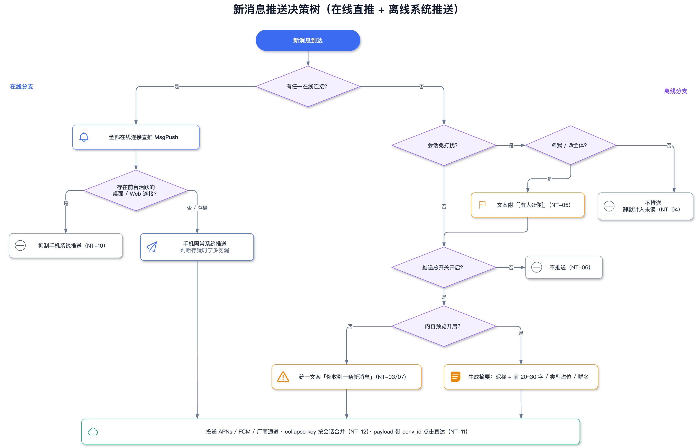
点击放大推送 Token 经 POST /v1/push/token 注册 / 刷新；通道返回无效 Token 后服务端停发，等待重新注册。
9消息核心架构（RocketMQ）
9.1总体结构

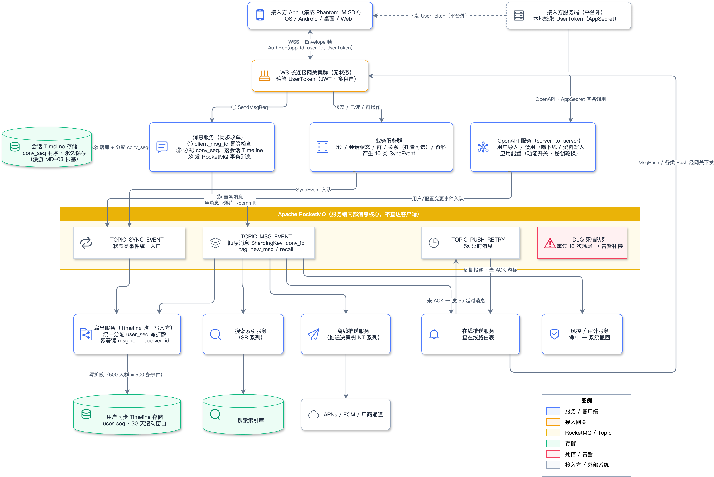
点击放大平台化边界：网关完成多租户验签（AppSecret 经配置中心缓存于网关）；OpenAPI 服务承接 server-to-server 管理面，产生的资料 / 关系 / 配置变更统一以 SyncEvent 汇入 TOPIC_SYNC_EVENT，不另设管理事件 Topic。关系链托管为应用级可选能力，业务服务按应用配置启停关系校验。
500 人群的 1→500 写放大由 MQ 缓冲，发送 RT 与扇出规模解耦。
消费失败自动重试最多 16 次 + 死信兜底，「不丢」不依赖手写重试。
新增下游 = 新增一个 Consumer Group，发送主链路零改动。
9.2发送链路

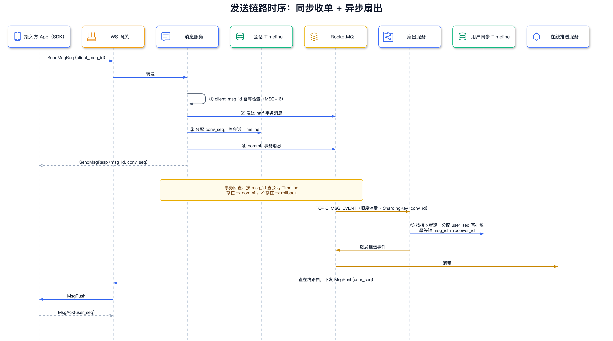
点击放大conv_seq分配不进 MQ：由消息服务在同步链路内按会话粒度取号，保证SendMsgResp返回时排序已确定 MSG-15。- 受限投递：消息服务判定受限后仍返回成功并落会话 Timeline，事务消息携带 restricted 标记，扇出服务只为发送者本人端写事件，并追加
RestrictedDeliveryEvent。
9.3可靠性三要素映射
| PRD 硬约束 | 服务端机制 | 客户端协议机制 |
|---|---|---|
| 不丢 | 事务消息（落库与投递原子）+ 消费重试 16 次 + DLQ 告警补偿 | MsgAck 游标 + SyncReq 兜底 |
| 不重 | 消费侧幂等键 msg_id + receiver_id（写 user_seq 事件前查重） | client_msg_id 发送幂等 + msg_id 展示去重 |
| 不乱序 | conv_seq 同步分配 + 顺序消息（ShardingKey=conv_id 恒定路由同一队列串行消费） | 按 conv_seq 排序渲染，按 user_seq 排序回放 |
9.4Topic 与消费组规划
| Topic | 消息类型 | 生产者 | 消费组 | 说明 |
|---|---|---|---|---|
TOPIC_MSG_EVENT | 顺序 + 事务，ShardingKey=conv_id | 消息服务 | 扇出 / 在线推送 / 离线推送 / 搜索索引 / 风控审计 | tag 区分 new_msg / recall |
TOPIC_SYNC_EVENT | 普通消息 | 各业务服务 | 扇出服务 | 10 类 SyncEvent 统一入口，由扇出统一分配 user_seq |
TOPIC_PUSH_RETRY | 定时消息（5s） | 在线推送服务 | 在线推送服务 | 承接「5 秒未 ACK 重推一次」，网关无状态化 |
TOPIC_MEDIA_PURGE | 定时消息 | 消息服务 | 媒体清理 | 阅后即焚：全部接收方已读后 ttl+24h 删除媒体；兜底发送后 30 天 |
%DLQ%* | 死信（自动） | — | 告警服务 | 重试耗尽 → 告警 + 人工补偿 |
- 顺序消息只用于
TOPIC_MSG_EVENT：状态类事件以服务端合并语义（撤回优先、取终态）容忍乱序，走普通消息换吞吐。 - 撤回复用消息通道：
tag=recall进入同一顺序队列，保证同会话「先消息后撤回」。 - 管理面不单设 Topic：OpenAPI 踢下线是即时同步动作（查路由表 → 网关 RPC，不经 MQ）；其余变更走
TOPIC_SYNC_EVENT。
9.5延时重推与网关无状态化
不在网关内存挂定时器（网关重启即丢失），改为：
- 在线推送服务下发
MsgPush的同时，向TOPIC_PUSH_RETRY发一条 5 秒延时消息（携带 receiver_id + user_seq）； - 到期消费时对比该用户 ACK 游标：
acked_user_seq ≥ user_seq则丢弃，否则重推一次； - 重推后不再续发，继续未达由客户端 SyncReq 兜底（三级必达的第三级）。
由此 WS 网关完全无状态，可随意扩缩容与滚动发布。
9.6在线路由表
路由表回答一个问题：给某个用户推送时，该投到哪些网关实例的哪些连接上。它是在线推送、离线推送判定、信令路由的共同数据源。

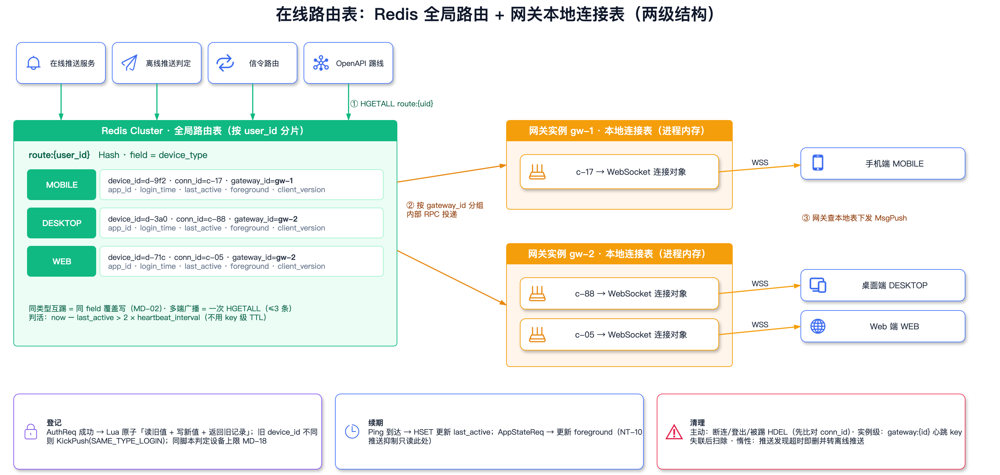
点击放大- 两级：Redis 只回答「该用户在哪些网关上有哪些端」，不持有连接；网关进程内存持有真正的 WebSocket 句柄。
- 以 device_type 为 field：三类设备各至多一条在线，同类型互踢退化为同 field 覆盖写；多端广播即一次
HGETALL（≤3 条）。 - 不用 key 级 TTL：TTL 是整 key 粒度，会把三端一起过期；判活规则
now − last_active > 2 × heartbeat_interval。 - 先比对 conn_id 再删：防止旧连接迟到的断连事件误删刚登记的新连接。
- 定位为尽力而为的缓存：多推给已死连接无害（无 ACK 走重推 / Sync），漏推有 Sync 兜底，因此清理逻辑无需分布式事务。
- 多租户：Phantom ID 全局唯一，key 无需
app_id前缀；app_id存于记录值内。
9.7边界：不引入的部分
| 不做 | 原因 |
|---|---|
| MQ 直达客户端 | 客户端只感知 WS 网关的 Envelope 帧，协议零改动 |
| 读扩散降级 | 群上限 500，纯写扩散足够（钉钉对万人群才切读扩散） |
| Typing / Presence 进 MQ | 不落库、时效敏感，网关间直接路由 |
| MQ 广播做多端同步 | 多端一致性已由用户同步 Timeline + 单游标解决，广播会绕过 user_seq 权威 |
10接口设计
10.1通用约定
- Base：
https://api.phantom.im/v1，Content-Type: application/json; charset=utf-8。 - 统一响应包：
{ "code": 0, "message": "ok", "data": {...} }，错误码与长连接共用（§10.6）。 - 幂等：写操作支持
X-Idempotency-Key头，服务端 24h 去重。 - 分页：游标式
cursor+limit，回包带next_cursor/has_more。
10.2平台化鉴权
身份三层：开发者 → 应用（AppID / AppSecret）→ 用户（Phantom ID）。鉴权分两条链路：
SDK 用户鉴权 · UserToken
接入方服务端用 AppSecret 本地签发 JWT（HS256），claims { app_id, user_id, iat, exp }，exp 建议 ≤7 天、上限 30 天。平台只验签、不回调 AC-03。用于 WS 握手与端上 HTTP。
OpenAPI 服务端鉴权 AC-12
/openapi/* 请求头携 X-App-Id + X-Timestamp + X-Signature（HMAC-SHA256(AppSecret, method+path+body+timestamp)），时间戳偏差 >5 分钟拒绝，按应用限频。
- 过期与刷新：存量长连接不因过期中断，重连时校验；被拒
2001 TOKEN_EXPIRED时 SDK 回调宿主取新 Token 自动重连 AC-04。平台不提供 refresh 接口。 - 秘钥轮换 AC-09：宽限期（≤7 天）内新旧 AppSecret 双秘钥验签；应急轮换宽限期置 0，旧 Token 即刻失效。
- 强制下线：接入方经 OpenAPI 禁用用户或强制下线 → 在线连接收
KickPush，后续验签返回2002 TOKEN_REVOKED。
10.3API 域总表
| 域 | 代表接口 | 覆盖需求 |
|---|---|---|
/openapi/apps | 应用配置读写（功能开关）、AppSecret 轮换 | AC-01/08/09 |
/openapi/users | 创建 / 导入用户（幂等）、禁用 / 恢复 / 删除、强制下线、资料写入 | AC-02/05~07/10 |
/users | 我的资料读写、他人资料卡、按 Phantom ID 查询 | AC-05 REL-01 |
/friends | 申请发起 / 列表 / 通过 / 拒绝 / 忽略、好友列表（增量版本号）、备注、分组、删除 | REL-01~12 |
/blacklist | 拉黑 / 解除 / 列表 | REL-13/14 |
/groups | 建群、群资料、成员分页、邀请、踢人、退群、转让、管理员、禁言、公告、群名片、邀请链接、解散 | GC 全系列 |
/conversations | 会话列表快照、置顶 / 免打扰 / 删除 / 草稿写入、按 conv_id 建会话 | CV 全系列 |
/conversations/{id}/messages | 漫游分页、会话内搜索 | MD-03/04 SR-11 |
/conversations/{id}/read-positions | 成员已读位置快照 | 群聊已读语义 |
/search | 全局搜索（联系人 / 群 / 聊天记录）、联想 | SR-01~10 SR-14 |
/devices | 在线设备列表、远程下线 | AC-14 MD-14/15 |
/push | 推送 Token 注册、通知设置（总开关 / 预览开关） | NT-06/07 |
/report | 举报、申诉、处理进度 | SEC-01~05 SEC-09 |
/account | 数据导出（合规） | SEC-16/17 |
/media | 分片上传三接口（§10.5） | MSG-03~06 |
草稿写入客户端 2 秒防抖，带 edited_at 时间戳供服务端做「最后编辑获胜」仲裁。
10.4会话列表快照
GET /v1/conversations?cursor=&limit=50
→ { conversations: [ { conv_id, conv_type, target(资料摘要), last_msg(摘要),
unread_count, mention_me, pinned, pinned_at, muted, draft, draft_edited_at,
max_conv_seq, read_conv_seq } ], next_cursor, has_more, max_user_seq }
10.5媒体分片上传
1. POST /media/upload/init { file_name, size, sha256, mime } → { upload_id, part_size, uploaded_parts[] }
2. PUT /media/upload/{upload_id}/part/{n} # 二进制分片；重复上传同分片幂等
3. POST /media/upload/{upload_id}/complete → { media_id, url, thumb_url }
- 断点续传：中断后带同一 sha256 重新
init，返回uploaded_parts续传；连续失败 3 次置发送失败。 - 秒传：
init时 sha256 命中已有文件直接返回media_id（阅后即焚模式下禁用）。 - 大小超限在
init即拒绝：4006 MEDIA_TOO_LARGE。
10.6错误码体系
长连接（Envelope.code 与业务码）与 HTTP（响应包 code）共用一套：
| 分段 | 域 | 代表错误码 |
|---|---|---|
0 | 成功 | — |
1xxx | 通用 | 1001 INVALID_PARAM 1002 SERVER_ERROR 1003 RATE_LIMITED 1004 UPGRADE_REQUIRED |
2xxx | 鉴权 / 设备 | 2001 TOKEN_EXPIRED 2002 TOKEN_REVOKED 2003 AUTH_FAILED 2004 USER_DISABLED 2005 DEVICE_LIMIT_EXCEEDED；2006 已废弃，编号保留 |
3xxx | 关系 / 权限 | 3001 USER_NOT_FOUND 3002 NOT_FRIEND 3003 IN_MY_BLACKLIST 3004 REJECTED_BY_PEER 3005 FRIEND_LIMIT_EXCEEDED 3006 DUPLICATE_APPLY 3007 ALREADY_HANDLED |
4xxx | 消息 | 4001 MSG_TOO_LONG 4002 CONV_INVALID 4003 RECALL_TIMEOUT 4004 ALREADY_RECALLED 4005 CONTENT_BLOCKED 4006 MEDIA_TOO_LARGE 4007 BURN_MODE_FORBIDDEN |
5xxx | 群 | 5001 GROUP_FULL 5002 NO_PERMISSION 5003 MUTED 5004 GROUP_DISSOLVED 5005 MENTION_ALL_RATE_LIMITED 5006 NOT_IN_GROUP |
6xxx | 风控 / 合规 | 6001 ACCOUNT_RESTRICTED 6002 ACCOUNT_BANNED 6003 MINOR_MODE_FORBIDDEN |
11开发视图
11.1工程结构与依赖方向

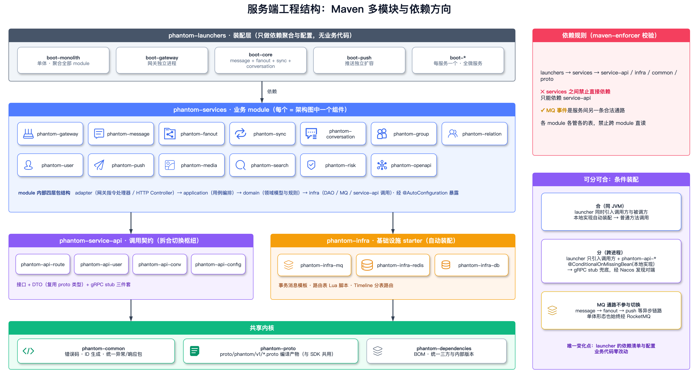
点击放大phantom-im-server/ # Maven 聚合根（packaging=pom） ├── phantom-dependencies/ # BOM：统一三方与内部模块版本 ├── phantom-proto/ # proto/phantom/v1 编译产物 ├── phantom-common/ # 错误码、ID 生成、统一异常/响应包 ├── phantom-infra/ # 基础设施 starter：infra-mq / infra-redis / infra-db ├── phantom-service-api/ # 调用契约：api-route / api-user / api-conv / api-config ├── phantom-services/ # 13 个业务 module │ ├── phantom-gateway/ phantom-message/ phantom-fanout/ phantom-sync/ │ ├── phantom-conversation/ phantom-group/ phantom-relation/ phantom-user/ │ └── phantom-push/ phantom-media/ phantom-search/ phantom-risk/ phantom-openapi/ └── phantom-launchers/ # boot-monolith / boot-gateway / boot-core / …
launchers → services → service-api / infra / common / proto。services 之间禁止直接依赖，只能依赖 service-api；MQ 事件是服务间另一条合法通路。各 module 各管各的表，禁止跨 module 直读（靠评审约定 + 独立库账号）。11.2module 内部结构
im.phantom.message ├── adapter/ # 入口适配：网关指令处理器（SendMsgReq）、HTTP Controller ├── application/ # 用例编排：收单流程（幂等→取号→落库→事务消息） ├── domain/ # 领域模型与规则：Msg、conv_seq 取号、撤回窗口判定 ├── infra/ # 出口适配：Timeline DAO、MQ 生产、service-api 调用 └── MessageAutoConfiguration.java # @AutoConfiguration，launcher 引入即生效
- 每个 module 通过 Spring Boot 自动装配暴露自己，launcher 不做
@ComponentScan全局扫描，避免单体形态下的隐式耦合。 - 对外两类表面：
service-api接口的本地实现（@ConditionalOnMissingBean注册）+ MQ 事件。 - 网关指令分发采用 SPI：业务 module 注册自己关心的
Command处理器，网关不依赖任何业务 module。
11.3可分可合切换机制
拆合的唯一变化点在 launcher 的依赖清单与配置，业务代码零改动。
// phantom-api-route 内（示意） @AutoConfiguration public class RouteApiAutoConfiguration { @Bean @ConditionalOnMissingBean(RouteTableService.class) // 本地实现不存在 → 远程 stub RouteTableService routeTableGrpcClient(GrpcChannelFactory f) { ... } }
- 合（同 JVM）：launcher 同时引入调用方与被调方，本地实现被自动装配，调用即普通方法调用。
- 分（跨进程）：launcher 只引入调用方 +
phantom-api-*，gRPC stub 兜底，经 Nacos 发现对端。 - api module 三件套：接口 + DTO（复用 proto 类型）+ gRPC stub 实现。
- MQ 通路不参与切换：异步链路始终走 RocketMQ，单体也不例外。
11.4构建与版本治理
- BOM：
phantom-dependencies锁定 Spring Boot 4.x、RocketMQ client 5.x、gRPC、Nacos 等版本；根 pom 只 import BOM。 - proto 单一来源：从仓库根
proto/phantom/v1/*.proto生成 Java，与 SDK 共用同一份。 - 统一版本号：revision 占位符 + flatten-maven-plugin，module 间永远同版本。
- 质量门禁：enforcer 校验依赖方向、按 module 并行单测、
mvn -pl增量构建配合 CI 变更检测。
12部署视图
12.1部署形态

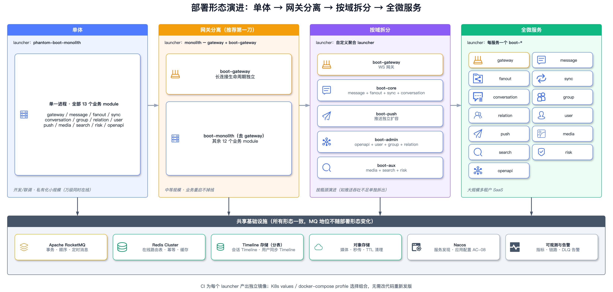
点击放大| 形态 | launcher | 适用规模 | 说明 |
|---|---|---|---|
| 单体 | phantom-boot-monolith | 开发 / 联调、私有化小规模（万级同时在线） | 一个进程 + RocketMQ + Redis + DB；网关用虚拟线程 |
| 网关分离 | monolith 去掉 gateway + phantom-boot-gateway | 中等规模 | 长连接生命周期与业务发布解耦，业务重启不掉线。推荐的第一刀 |
| 按域拆分 | 自定义聚合 launcher | 按瓶颈演进 | 例：推送吞吐不足时单独拆出 phantom-push 扩容 |
| 全微服务 | 每服务一个 boot-* | 大规模多租户 SaaS | 与图 9-1 消息核心架构一一对应 |
CI 对每个 launcher 产出独立镜像，部署编排（K8s values / docker-compose profile）选择组合，无需改代码重新发版。
12.2组件与 module 映射
| 架构组件 | 承载 module |
|---|---|
| WS 网关（验签 / 路由登记 / 指令分发） | phantom-gateway |
| 消息服务（同步收单） | phantom-message |
| 扇出服务（user_seq 唯一写入方） | phantom-fanout |
| 业务服务群（已读 / 会话 / 群 / 关系 / 资料） | phantom-conversation / group / relation / user（+ sync 读取侧） |
| OpenAPI 服务（管理面） | phantom-openapi |
| 在线 / 离线推送服务 | phantom-push |
| 搜索索引 / 风控审计 / 媒体清理 | phantom-search / phantom-risk / phantom-media |
| 在线路由表（Redis Lua） | phantom-infra-redis 提供操作封装，phantom-api-route 提供跨服务读写契约 |
13质量属性设计
13.1可靠性：三级必达
查路由表直推 MsgPush，客户端回 MsgAck 推进设备游标。
5 秒延时消息检查 ACK 游标，未确认则重推一次。
事件永远留在同步 Timeline，客户端 SyncReq 按游标补齐。
服务端「不丢 / 不重 / 不乱序」的具体机制见 §9.3。
13.2性能与容量
- 发送 RT 与扇出规模解耦：同步链路只到会话 Timeline 落库，500 人群写放大由 MQ 缓冲。
- 路由表：单用户至多 3 个 field，百万同时在线约几百 MB；读写均为 O(1) 单 key 操作，按 user_id 分片水平扩展。
- 已读回执放大抑制：5 秒窗口合并，回执量与活跃阅读者数相关而非消息数 × 成员数。
- 同步事件合并：撤回合并、状态取终态，减少下发量。
- 在线状态订阅制：单次订阅 ≤50 人，避免全量好友状态推送风暴。
13.3可用性与故障恢复
| 场景 | 表现 | 恢复路径 |
|---|---|---|
| 落库成功、commit 前消息服务宕机 | half 消息悬挂 | Broker 回查 → 查到会话 Timeline 有该 msg_id → commit |
| 落库失败 | half 消息悬挂 | 回查查不到 → rollback；客户端超时重发（client_msg_id 幂等） |
| 扇出服务消费失败 | 自动重试（间隔递增） | 幂等键防止已写接收者重复；16 次耗尽进 DLQ 告警 |
| 扇出滞后（堆积） | 接收端延迟收到 | 客户端经 SyncReq 拉到已扇出部分；消费堆积告警扩容 |
| 推送服务宕机 | MsgPush 未下发 | 未 ACK 消息重投给同组其他实例；最终 Sync 兜底 |
| 网关实例宕机 | 路由表残留脏数据 | 实例心跳 key 失联后清理任务扫除；惰性清理转离线推送 |
| 服务端故障恢复 | 大量客户端同时重连 | 指数退避 + ±30% 抖动，避免重连风暴 |
13.4可扩展性
- WS 网关无状态（重推交给延时消息），可随意扩缩容与滚动发布。
- 新增下游能力 = 新增一个 Consumer Group，主链路零改动。
- 部署形态按瓶颈演进，业务代码零改动（§12）。
13.5安全
- 传输：全链路 TLS 1.3（WSS / HTTPS），禁明文；移动端证书固定列入客户端实现建议。
- 认证：UserToken + OpenAPI 签名双链路（§10.2）；WS 连接生命周期内 Token 过期不断连，重连时校验。
- 内容风控 SEC-10~12：文本 / 图片在
SendMsgReq处理链内同步扫描，拦截返回4005；疑似违规先投递 + 异步复审，违规触发系统撤回（operator 标记为系统）。 - 频控 SEC-13：网关层按
(user_id, cmd)令牌桶，HTTP 按(user_id, 路由)；超限1003并带retry_after。 - 非好友消息请求 SEC-14：会话标记
is_request=true，客户端归入「消息请求」分区、不计主未读；接收方同意后转正常会话。 - 隐私最小披露：搜索不可见、冷静期、拒收等统一返回
3001 / 3004类模糊错误。
阅后即焚（应用级可选能力）
| 方面 | 设计 |
|---|---|
| 开关 | 应用级（控制台 AC-08），经 AuthResp.burn_after_read { enabled, ttl_seconds } 下发，重连后生效 |
| 客户端销毁 | 消息实际展示后启动倒计时，到期删除本地消息体与媒体缓存；各端独立计时；本地按会话记录已销毁 msg_id 墓碑，防止漫游回显 |
| 服务端消息体 | 保留（定位「前台不可见」，非服务端抹除） |
| 服务端媒体 | 全部接收方 read_conv_seq 越过该消息后，延时 ttl + 24h 经 MQ 删除；兜底发送后 30 天强制清理 |
| 限制 | 禁用 sha256 秒传；禁用 MERGED 合并转发（返回 4007）；不防截图 / 录屏 |
14需求追溯
| PRD 功能域 | 承接章节 |
|---|---|
| 01 应用与用户身份 | §10.2 平台化鉴权、§10.3 /openapi/* /users、§6.3 AuthReq / KickPush |
| 02 关系链 | §10.3 /friends /blacklist、§7.5 RelationEvent、§10.6 错误码 3xxx |
| 03 消息能力 | §7.2–7.3 消息模型、§8.1–8.3 收发与撤回、§10.5 媒体 |
| 04 单聊 | §8.1 受限投递、§8.9 输入 / 在线状态 |
| 05 群聊 | §7.5 GroupEvent、§10.3 /groups、§10.6 错误码 5xxx、§7.2 mentions |
| 06 会话列表 | §10.3–10.4 /conversations、§7.5 ConvStateEvent / DraftEvent、§8.6 未读数 |
| 07 多端同步 | §6.3–6.5 在线策略与重连、§7.4 双 Timeline、§8.4–8.8 同步流程、§9.6 路由表 |
| 08 通知推送 | §8.10 推送决策树、§10.3 /push |
| 09 搜索 | §10.3 /search、§8.7 direction=newer 定位补页、§9.4 搜索索引消费组 |
| 10 安全合规 | §13.5 安全、§10.3 /report、§10.6 错误码 4005 / 6xxx |
14.1消息核心机制追溯
| 需求 | 机制 |
|---|---|
| MSG-13/14 消息必达 | 事务消息 + 消费重试 + DLQ + 延时重推 + Sync 兜底 |
| MSG-15 会话内有序 | conv_seq 同步分配 + conv_id 顺序消息 |
| MSG-16 幂等 | client_msg_id（收单）+ msg_id + receiver_id（扇出） |
| MD-05 多端增量同步 | 扇出服务唯一写入 user_seq |
| GC-02 500 人群 | 写扩散经 MQ 削峰，扇出异步化 |
| NT 系列推送 | 离线推送服务独立消费组，决策树独立演进 |
| SR 系列搜索 | 搜索索引消费组，主链路零侵入 |
| SEC-06 内容风控 | 风控消费组异步复核，命中发起系统撤回 |
| AC-02~10 平台化管理面 | 用户导入 / 资料写入经 TOPIC_SYNC_EVENT 扇出；禁用 / 强制下线查路由表即时踢线 |
15待决事项
| 事项 | 现状 |
|---|---|
| 专题文档评审 | 消息核心架构设计、服务端工程结构设计状态为「待评审」 |
| 扫码登录 MD-16/17 | 平台已移除 /auth/qrcode 系列接口，应由接入方在自有账号体系内实现；PRD 07 待适配 |
| 跨 module 读表约束 | enforcer 无法约束，目前依靠评审约定 + 各 module 独立库账号 |
| 工程初始化 | 实现阶段按 §11.1 目录树初始化 Maven 工程，在计划阶段展开为具体任务 |
A附录：交付物与源文件
| 类别 | 路径 | 说明 |
|---|---|---|
| Protobuf 契约 | proto/phantom/v1/envelope.proto | 帧结构与指令枚举 |
proto/phantom/v1/common.proto | 公共类型（设备、会话、错误码分段） | |
proto/phantom/v1/message.proto | 消息模型与收发 / 撤回指令 | |
proto/phantom/v1/sync.proto | 同步事件流、已读、摘要比对 | |
proto/phantom/v1/signaling.proto | 认证 / 心跳 / 踢下线 / 输入状态 / 在线状态 / App 状态 | |
| 架构图（draw.io） | diagrams/im-business-architecture.drawio | 图 4-1 业务分层架构 |
diagrams/im-layered-architecture.drawio | 图 5-1 分层技术架构 | |
diagrams/mq-message-core.drawio | 图 9-1 消息核心架构 | |
diagrams/flow-send-client.drawio · flow-receive-ack.drawio · flow-sync.drawio | 图 8-1、8-2、8-5 流程图 | |
diagrams/seq-*.drawio | 图 6-1、8-3、8-4、8-6~8-9、9-2 时序图 | |
diagrams/push-decision.drawio | 图 8-10 推送决策树 | |
diagrams/route-table.drawio | 图 9-3 在线路由表 | |
diagrams/module-dependency.drawio | 图 11-1 模块依赖 | |
diagrams/deployment-topology.drawio | 图 12-1 部署形态 |
所有 .drawio.png 均内嵌图源 XML，可直接拖入 draw.io 继续编辑。